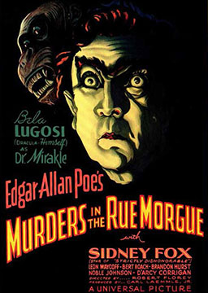

莫格街谋杀案（简化版） (The Murders in the Rue Morgue)
作者：埃德加·爱伦·坡 (Edgar Allan Poe) [美国]
法国巴黎的奥古斯特·杜邦先生，他并非警官，也不是一个真正的侦探。他是一个性格温和酷爱书籍和阅读的年轻人。但是他聪明至极，理解能力高人一等。他对莫尔格街发生的可怕的凶杀案产生了浓厚的兴趣，因为它是一个未解之谜。是谁杀害了老太太和她的女儿？这场凶杀案为何如此粗暴凶残？凶手又是如何逃出房子的？有众多谜团，却没有谜底。“诀窍，”奥古斯特·杜邦说，“在于问恰当的问题。然后就可以找到谜底……”
难度：
高中
长度：
短篇
分类：
悬疑
第一章: 我的朋友奥古斯特·杜邦 My friend Auguste Dupin
第二章: 凶杀案 The murders
第三章: 证人的证词 What the witnesses said
第四章: 奥古斯特·杜邦造访莫尔格街 Auguste Dupin visits the Rue Morgue
第五章: 声音和窗户之谜 The mysteries of the voice and the window
第六章: 这是疯子所为 A madman has done this
第七章: 奥古斯特·杜邦的访客 A visitor for Auguste Dupin